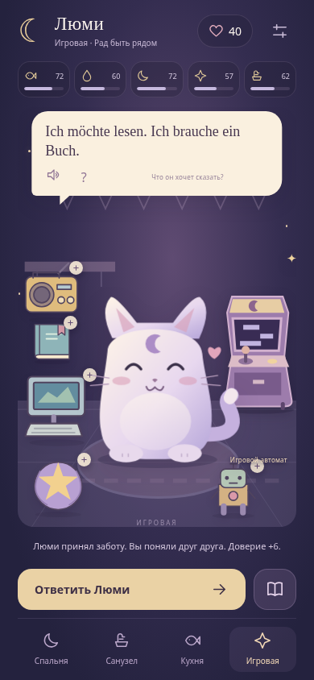
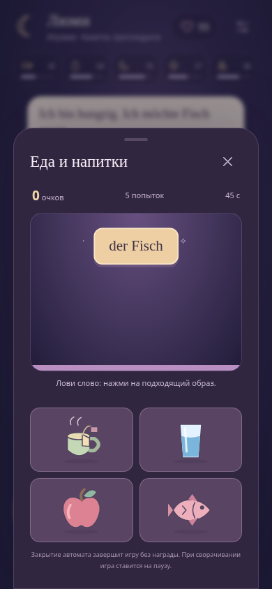

☾ Лунный кот
Версия 0.3 · Исследуй квартиру, изучай 300 слов и закрепляй их в игровом автомате.
Скачать APK · около 4 МБСпальня, санузел, кухня и игровая. Нажимай на вещи, узнавай немецкие слова с артиклями и понимай просьбы Люми.

